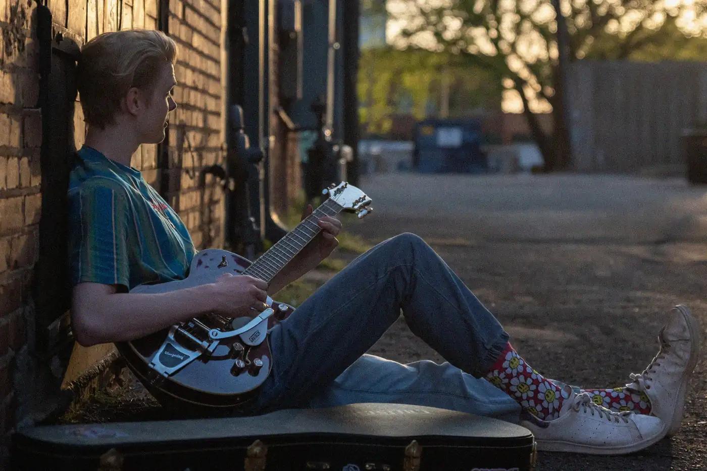
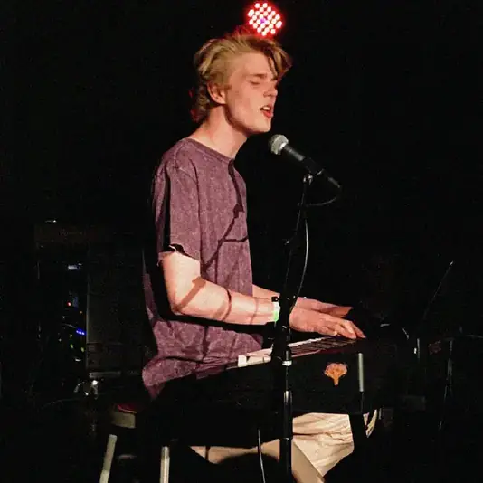
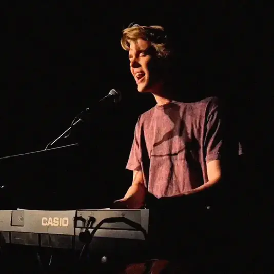
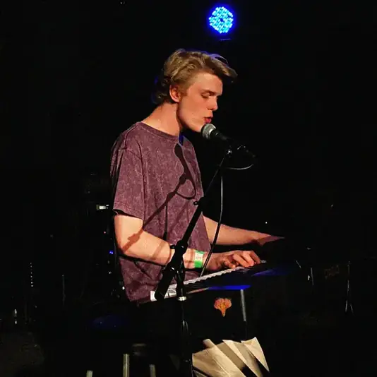
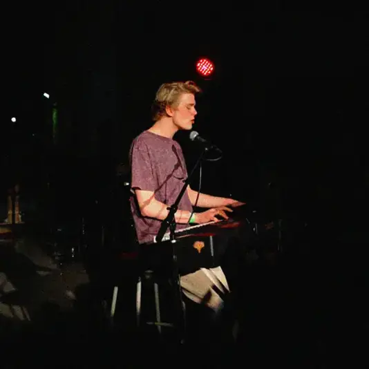
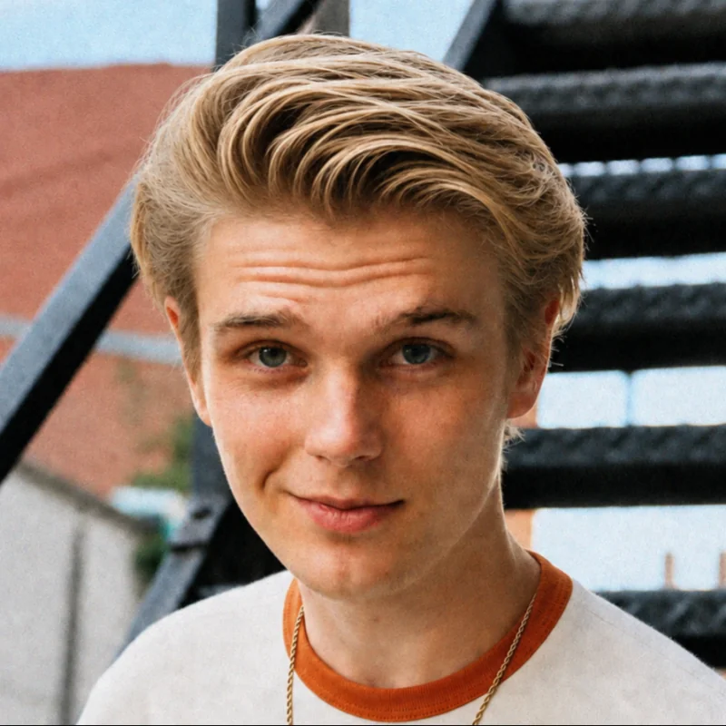
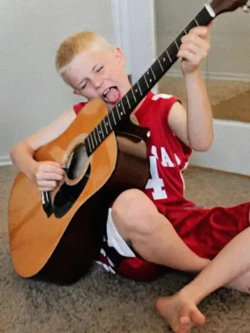
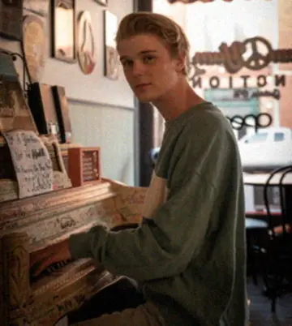

Contact
For shows, press, or anything - message directly.
ashstumusic@gmail.comMusic
“Anybody caught singin’ these songs without our permission, will be
mighty good friends of ourn, cause we don’t give a dern.
Publish it. Write it. Sing it. Swing to it. Yodel it.
We wrote it, that’s all we wanted to do.” Woody Guthrie
Videos
About
Ash Stu
A figment of my own imagination.
Outsider singer-songwriter from Guthrie, Oklahoma, formerly known as Ashton Stubblefield.


